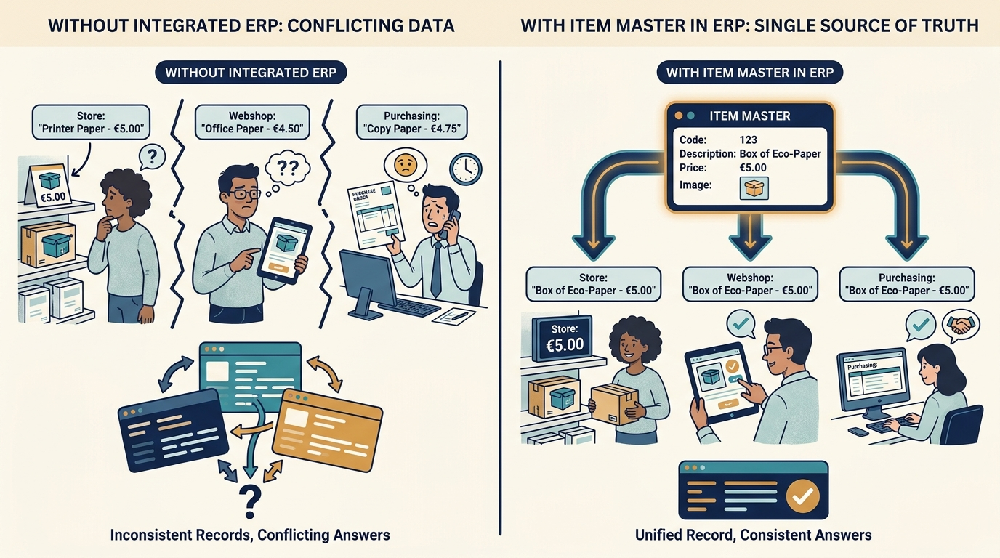
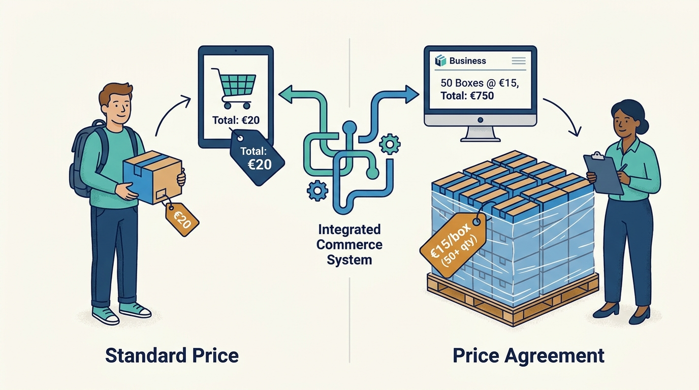
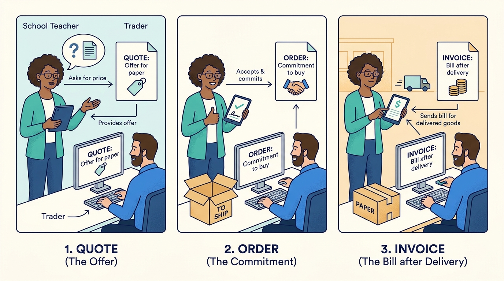
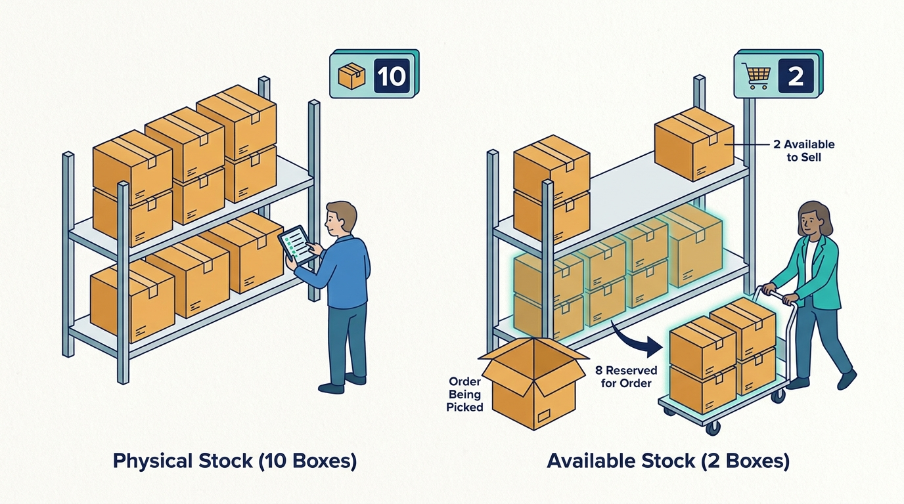
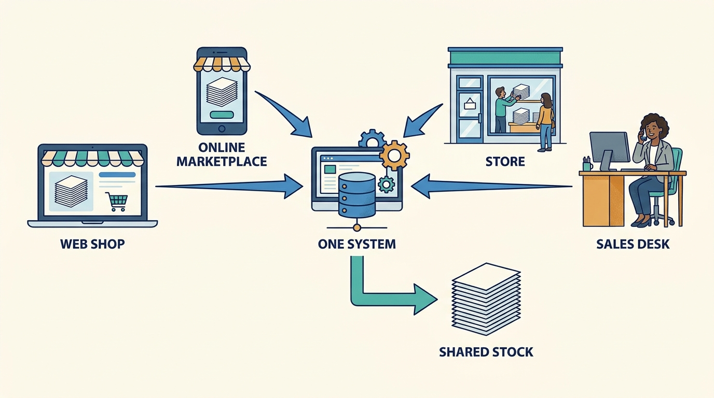

The owner
Decides on channels, assortment and software, and carries the financial risk.
What matters to them
Margin, growth without hiring more office staff, and not being stuck with software the company outgrows.
A beginner's guide
Who this is for
A curious adult coming from a different field, with no assumed knowledge of retail, wholesale or business software.
What this guide covers
How mid-sized trading companies (wholesalers, shops and webshops that buy goods and resell them) use one integrated software package to sell, stock, ship and keep the books. Examples are Dutch and Belgian; manufacturing and food retail are outside this guide. People and numbers in the walkthrough are fictional.
01
Explain what a trading company does and why its many sales channels need one shared record of items, prices and stock.
Distinguish a quote, an order, a reservation, a shipment and an invoice.
Follow one order from a webshop to the warehouse and into the books, including what goes wrong when stock is wrong.
Describe the trade-off between one all-in-one package and several specialist tools.
02
A trading company buys goods from manufacturers and sells them on: to consumers through a webshop or a store, to businesses through a sales desk or a business webshop, and increasingly through marketplaces such as bol or Amazon. Commerce ERP (enterprise resource planning) software is the system in which such a company keeps track of what it sells, at what price, how much is in stock, who ordered what, and what money comes in and goes out.
Every channel makes promises: 'in stock, delivered tomorrow', 'your agreed price', 'invoice due in 30 days'. If the webshop, the store register and the accounting each keep their own copy of the facts, the copies drift apart and promises break. One shared system keeps them true.
03
Decides on channels, assortment and software, and carries the financial risk.
What matters to them
Margin, growth without hiring more office staff, and not being stuck with software the company outgrows.
Run the webshops, marketplaces and business accounts.
What matters to them
Correct prices and stock on every channel and quick quotes.
Buy goods, store them, pick and ship orders.
What matters to them
Knowing what is where, buying the right amount, shipping before the carrier's cut-off.
Sell in branches and keep the books.
What matters to them
Fast checkout, correct cash, and books that match what happened.
Build, host, implement and support the system; partners connect payments, carriers and marketplaces.
What matters to them
Customers that stay and grow, and integrations that keep working.
04
The single record of each product the company sells: code, description, images, supplier and purchase price.

If two systems hold different descriptions or prices for the same paper, customers and staff get contradicting answers.
Click the image to open it in a new tab.For example
A box of printer paper has one item record used by the webshop, the store and the purchase order.
Why it matters
If two systems hold different descriptions or prices for the same paper, customers and staff get contradicting answers.
A special price or discount agreed with a specific business customer, sometimes depending on quantity.

The same item can have many correct prices; the system must pick the right one for each customer and channel.
Click the image to open it in a new tab.For example
A school pays less per box when it orders 50 boxes than a consumer buying one.
Why it matters
The same item can have many correct prices; the system must pick the right one for each customer and channel.
A quote is an offer; an order is the customer's commitment; an invoice is the bill after delivery.

They are different moments with different obligations; mixing them leads to billing for things not delivered.
Click the image to open it in a new tab.For example
The school asks for a quote, accepts it (order), receives the paper and then gets the invoice.
Why it matters
They are different moments with different obligations; mixing them leads to billing for things not delivered.
Physical stock minus what is already promised to other orders.

Showing physical stock instead of available stock leads to overselling.
Click the image to open it in a new tab.For example
Ten boxes are on the shelf but eight are reserved for an order being picked, so only two are available.
Why it matters
Showing physical stock instead of available stock leads to overselling.
A route through which the company sells: own webshop, B2B portal, marketplace, store, sales desk, or EDI (computer-to-computer ordering).

Each channel must see the same stock and send orders into the same flow.
Click the image to open it in a new tab.For example
The same paper sells in the webshop, on bol and in the shop on the high street.
Why it matters
Each channel must see the same stock and send orders into the same flow.
05
A few turning points from the Dutch trading-software context; not a complete history.
Trading companies ran accounting software plus spreadsheets or custom stock programs; webshops appeared as separate add-ons.
What this helps explain
Data had to be copied between systems, the root of today's integration problems.
Vendors such as Logic4 (founded 2003, roots in 1998) built packages combining webshop, stock and accounting for smaller traders.
What this helps explain
Mid-sized companies got one shared record without enterprise-ERP budgets.
Marketplaces became major sales channels and software moved to the cloud with subscriptions.
What this helps explain
Channel connections and real-time stock sync became essential.
Specialist Dutch vendors joined groups such as Katapull, combining ERP, POS, marketplace, shipping, returns, EDI and warehouse tools.
What this helps explain
Customers can combine specialist tools from one group, raising the question of how well they connect.
06
Fictional case. Sanne owns a company with a webshop, a B2B portal, one store and a small warehouse, all on one commerce ERP.
A school buyer asks Tom in sales for 50 boxes of paper and 20 toner cartridges. Tom creates a quote; the system fills in the school's agreed prices and shows available stock.
Why this step matters
The quote is correct because prices and stock come from the shared record.
The school accepts. The quote becomes an order and the system reserves the goods so the webshop no longer offers them as available.
Why this step matters
Reservation prevents promising the same boxes twice.
Lisa in the warehouse scans items from their shelf locations, packs them, and a carrier label prints automatically.
Why this step matters
Scanning confirms the right items; the shipment record links to the order.
The supplier delivers toner; receiving it releases the backorder, which is picked and shipped.
Why this step matters
The system connects purchasing to waiting customers.
After shipment the invoice is created and posted to the books; when the school pays, the bank line is matched.
Why this step matters
Finance sees the result without retyping anything.
The outcome
The school receives everything in two deliveries with correct prices, Sanne's staff typed the order only once, and the books reflect the sale. Success means promises made in sales were kept by the warehouse and recorded by finance.
07
One system removes copying between webshop, stock and accounting, so the company can grow without proportionally more office staff.
For example
An order entered once becomes a pick list, shipment and invoice.
Vendors charge monthly subscriptions in tiers; more advanced features such as multiple warehouses or EDI sit in higher packages.
For example
Logic4 publishes packages from EUR 499 and EUR 999 per month, with higher tiers priced on request.
Software groups earn more when customers add sibling products; customers benefit if those connect cleanly, and lose if they are pushed into tools they do not need.
For example
A warehouse that outgrows the built-in module may add a dedicated warehouse system from the same group.
08
Sales happen simultaneously in the shop, webshop and marketplaces, while goods physically move.
The competing needs
Faster synchronisation costs more engineering and partner coordination.
In practice
A marketplace sells the last box minutes after the store did.
How people respond, and its limits
Reservations and stock events pushed to every channel; still imperfect when partners update slowly.
One package is simpler but each module may be less deep than a specialist tool.
The competing needs
Simplicity and one data model versus depth in specific areas.
In practice
A fast-growing webshop wants an advanced warehouse system.
How people respond, and its limits
Keep the core as the shared record and connect specialist tools via standard integrations.
Tax and invoicing rules change, for example mandatory electronic invoices between businesses.
The competing needs
Building compliance features takes capacity from customer-requested features.
In practice
Belgian businesses must exchange structured e-invoices from 2026.
How people respond, and its limits
Add standard connectors such as Peppol to the accounting module.
09
A better way to understand it
The webshop is one channel; prices, stock, orders and books live in the back office that feeds it.
A better way to understand it
Reserved stock is already promised; only available stock can be sold.
10
Trading companies sell through many channels that must share one truth about items, prices and stock.
Quote, order, reservation, shipment and invoice are distinct steps that the system links.
All-in-one packages trade depth for simplicity; groups of specialist tools try to offer both through integrations.
11
Pause and think through each situation, then open the answer.
Only 12 cartridges were available, so 8 became a backorder.
The reasoning
Available stock, not wished stock, determines what can ship; the backorder triggered purchasing.
It can sell items already reserved for other orders.
The reasoning
Reservations exist exactly to stop the same goods being promised twice.
12
Which of your channels updates stock slowest?
Which modules would you replace with a specialist tool, and why?
13
History of a Dutch all-in-one commerce ERP vendor.
Concrete description of stock and warehouse functions.